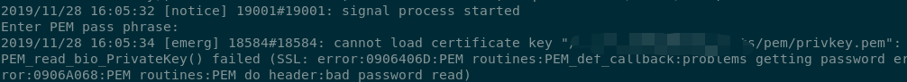

Contents
在CentOS上安装nginx
去官网nginx.org按照文档安装好nginx。
注意，nginx.com是卖商业版nginx的。
安装成功之后，直接运行nginx就可以了，nginx的配置文件在 /etc/nginx 中。
需要注意的是 nginx 需用以超级用户是身份启动，不然的话 nginx 相关日志会报错，没有权限访问，即使改了对应文件夹的权限也没用。
我这里是启动失败的，输出日志是 80 端口被占用了，但是打开 localhost:80 ，赫然显示的欢迎使用nginx，奇葩。
发送个停止服务的命令试试：
1 | sudo nginx -s stop |
嗯， localhost:80 访问不了了，说明是对的。
生成wss需要的key与证书
生成密钥
1 | openssl genrsa -out privkey.pem 2048 |
注意，这里不能用：
1 | openssl genrsa -des3 -out privkey.pem 2048 |
如果用了的话，再nginx验证过程中会出现读取密码错误的问题：

生成证书请求文件
1 | openssl req -new -key privkey.pem -out cert.csr |
这里会生成一个证书请求文件，如果要正式上线的话，需要用这个去向第三方商业机构申请一个数字证书了。
生成开发用的数字证书
1 | openssl req -new -x509 -key privkey.pem -out cacert.pem -days 1095 |
以上可以生成一个自己开发用的证书了。
完成
现在就可以使用 privkey.pem 和 cacert.pem 了
内容提供
将所需要的内容从git上拉取到 /usr/share/nginx/html/ 下面，这样需要在nginx展示的内容都放到这个子文件夹下面，假设叫 sample 吧。
conf修改
阅读了一遍 etc/nginx/nginx.conf ，知道了log的存放地址，看到了所有其他子配置都存放在 /etc/nginx/config.d/ 下面。
先修改 default.conf :
1 | location / { |
加入websocket.conf
然后我也有新增一个 websocket.conf:
1 | map $http_upgrade $connection_upgrade { |
验证
重启 nginx：
1 | sudo nginx -s reload |
然后刷新页面就可以看到结果了。
错误追踪
当然，我这个配置的过程中不是那么的顺利，nginx页面找不到的问题通过以下查看nginx的错误日志得到的：
1 | sudo tail -100f /var/log/nginx/error.log |
结果
目前暂时就进行到这里